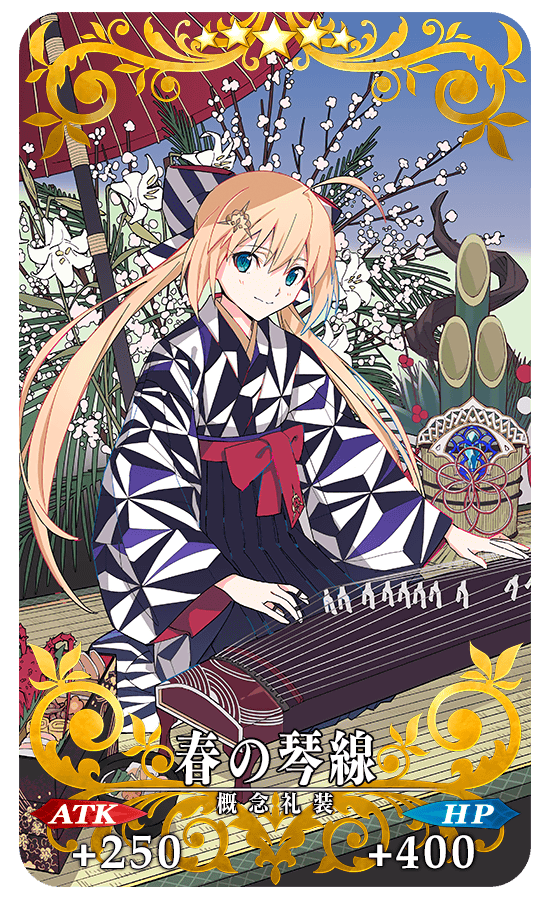
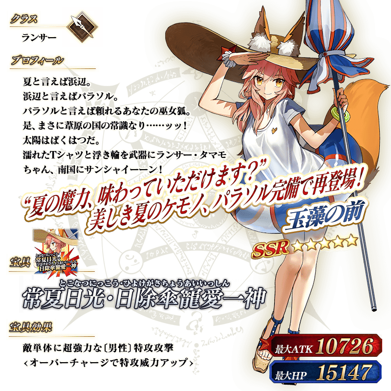
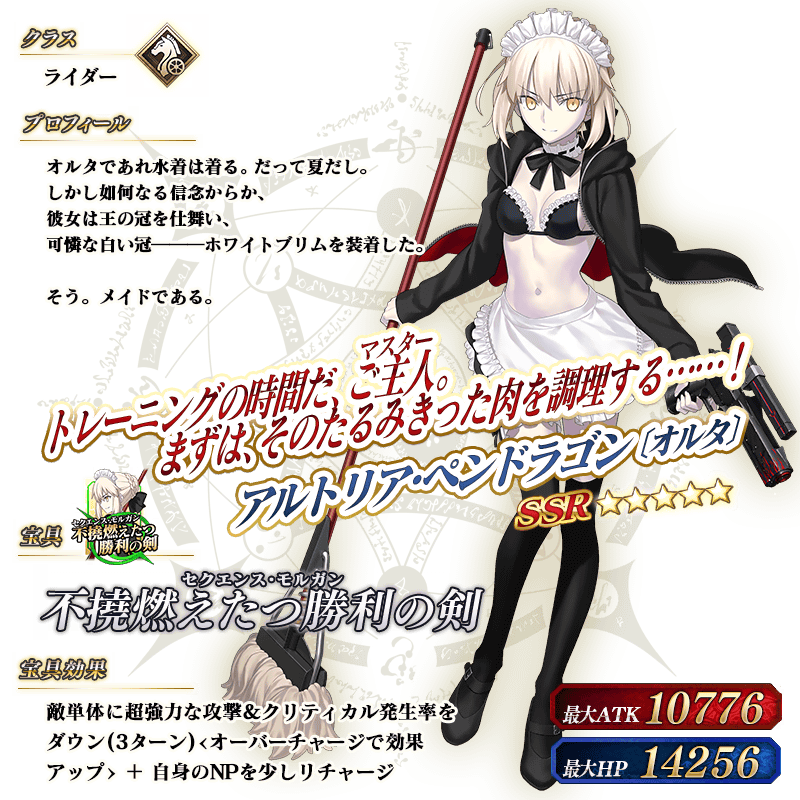
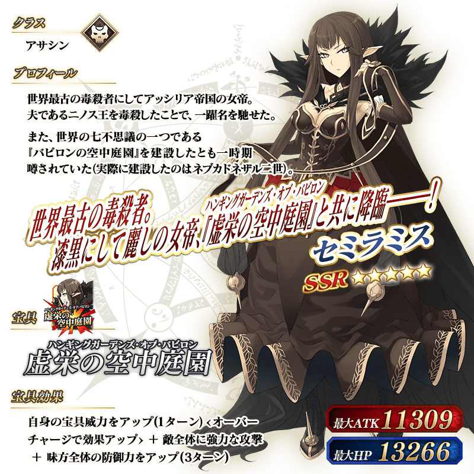
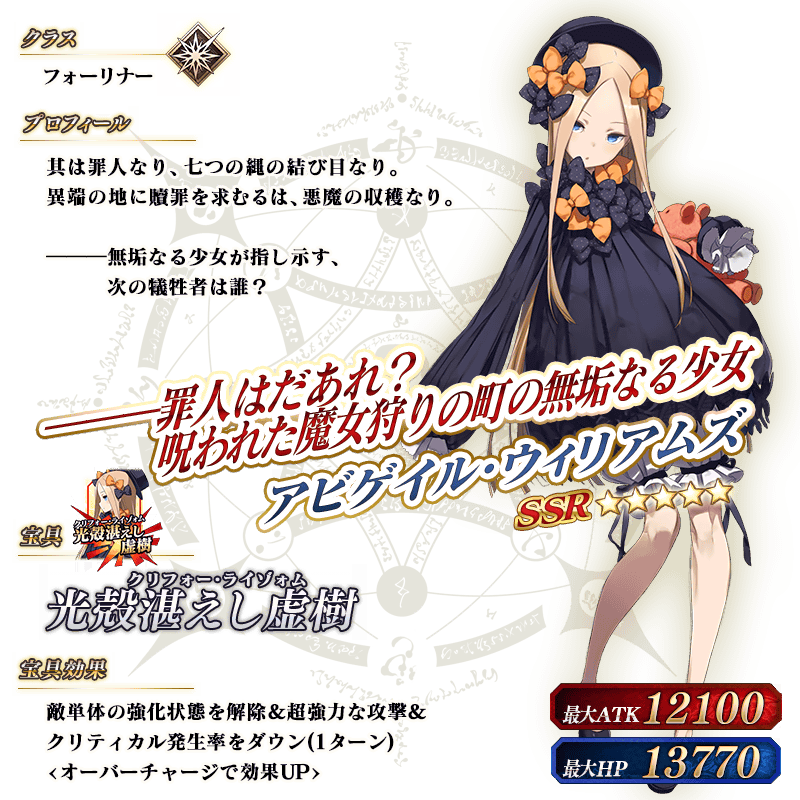
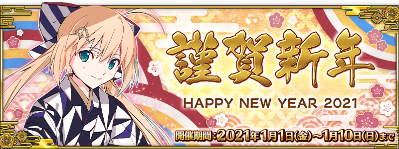

◆「New Year 2021Pick Up召喚(每日交替)」期間◆
期間:2021年1月1日(五) 23:00～1月15日(五) 11:59
舉辦期間限定「New Year 2021Pick Up召喚(每日交替)」！
為了記念迎接2021年，包含以期間限定新登場從者「★5(SSR)千子村正」的下述從者以每日交替Pick Up！
▼期間限定從者
【每日交替Pick Up】
・★5(SSR)千子村正
・★5(SSR)超人俄里翁
・★5(SSR)玉藻前(Lancer)
・★5(SSR)阿爾托莉亞・潘德拉剛〔Alter〕(Rider)
・★5(SSR)伊莉雅絲菲爾・馮・愛因茲貝倫(Caster)
・★5(SSR)賽米拉米斯
・★5(SSR)阿比蓋爾・威廉斯
另外，下述的期間限定概念禮裝常駐Pick Up！
【常駐Pick Up】
・★5(SSR)春の琴線
・★4(SR)笑うコタツに福来る
・★3(R)勇敢なるもの
Pick Up期間中，Pick Up對象從者與概念禮裝的出現機率提升！
詳情請在聖晶石召喚畫面左下的召喚詳細確認。
11次召喚中確定1張★4(SR)以上和確定1位★3(R)以上的從者！ ※確定★4(SR)以上包含從者和概念禮裝。 ※本頁面皆為開發中圖片。會有與實際圖片相異的情況。
◆有關從者的注意◆
※請注意本召喚做為每日交替，下述的從者就算舉辦期間中也有不會被抽出來的日子。
・★5(SSR)千子村正
・★5(SSR)超人俄里翁
・★5(SSR)玉藻前(Lancer)
・★5(SSR)阿爾托莉亞・潘德拉剛〔Alter〕(Rider)
・★5(SSR)伊莉雅絲菲爾・馮・愛因茲貝倫(Caster)
・★5(SSR)賽米拉米斯
・★5(SSR)阿比蓋爾・威廉斯
※下述的從者在Pick Up期間結束後不會追加到故事召喚。
・★5(SSR)千子村正
・★5(SSR)超人俄里翁
・★5(SSR)玉藻前(Lancer)
・★5(SSR)阿爾托莉亞・潘德拉剛〔Alter〕(Rider)
・★5(SSR)伊莉雅絲菲爾・馮・愛因茲貝倫(Caster)
・★5(SSR)賽米拉米斯
・★5(SSR)阿比蓋爾・威廉斯
◆有關概念禮裝的注意◆
※下述的概念禮裝，Pick Up期間中也能靠友情點數召喚獲得。
・★3(R)勇敢なるもの
※在自動變還設定登錄★3(R)概念禮裝的情況，下述的概念禮裝會變成自動變還的對象。
・★3(R)勇敢なるもの
◆「New Year 2021Pick Up召喚(每日交替)」Pick Up內容◆
| Pick Up期間 | 每日交替Pick Up | |
|---|---|---|
| 1/1(五) 23:00～22:59 | ★5 千子村正 | |
| 1/1(五) 23:00～1/2(六) 22:59 | ★5 阿爾托莉亞・潘德拉剛〔Alter〕(Rider) | |
| 1/2(六) 23:00～1/3(日) 22:59 | ★5 玉藻前(Lancer) | |
| 1/3(日) 23:00～1/4(一) 22:59 | ★5 賽米拉米斯 | |
| 1/4(一) 23:00～1/5(二) 22:59 | ★5 超人俄里翁 | |
| 1/5(二) 23:00～1/6(三) 22:59 | ★5 伊莉雅絲菲爾・馮・愛因茲貝倫(Caster) | |
| 1/6(三) 23:00～1/7(四) 22:59 | ★5 阿比蓋爾・威廉斯 | |
| 1/7(四) 23:00～1/8(五) 22:59 | ★5 千子村正 | |
| 1/8(五) 23:00～1/9(六) 22:59 | ★5 阿爾托莉亞・潘德拉剛〔Alter〕(Rider) | |
| 1/9(六) 23:00～1/10(日) 22:59 | ★5 玉藻前(Lancer) | |
| 1/10(日) 23:00～1/11(一) 22:59 | ★5 賽米拉米斯 | |
| 1/11(一) 23:00～1/12(二) 22:59 | ★5 超人俄里翁 | |
| 1/12(二) 23:00～1/13(三) 22:59 | ★5 伊莉雅絲菲爾・馮・愛因茲貝倫(Caster) | |
| 1/13(三) 23:00～1/14(四) 22:59 | ★5 阿比蓋爾・威廉斯 | |
| 1/14(四) 23:00～1/15(五) 11:59 | ★5 千子村正 | |
※請注意會以每日交替變更Pick Up的從者。
|  |
★★★★★SSR |
|
★★★★SR |
|
★★★R |

 ※上述「★5(SSR)超人俄里翁」的立繪為靈基再臨第1階段。
※上述「★5(SSR)超人俄里翁」的立繪為靈基再臨第1階段。

 ※上述「★5(SSR)阿爾托莉亞・潘德拉剛〔Alter〕(Rider)」的立繪為靈基再臨第1階段。
 ※上述「★5(SSR)伊莉雅絲菲爾・馮・愛因茲貝倫(Caster)」的立繪為靈基再臨第1階段。
※上述「★5(SSR)伊莉雅絲菲爾・馮・愛因茲貝倫(Caster)」的立繪為靈基再臨第1階段。


介紹「★5(SSR)千子村正」的寶具演出！
在「Fate/Grand Order」官方網站內的公告中，以影片公開寶具演出，敬請確認。
介紹在本召喚Pick Up的6位從者寶具演出！
在「Fate/Grand Order」官方網站內的公告中，以影片公開寶具演出，敬請確認。
※阿比蓋爾・威廉斯的寶具會根據再臨階段變化演出。
【★5(SSR)超人俄里翁】
【★5(SSR)玉藻前(Lancer)】
【★5(SSR)阿爾托莉亞・潘德拉剛〔Alter〕(Rider)】
【★5(SSR)伊莉雅絲菲爾・馮・愛因茲貝倫(Caster)】
【★5(SSR)賽米拉米斯】
【★5(SSR)阿比蓋爾・威廉斯】
其他還有，
・2021年新年宣傳活動
・福袋召喚2021(紅白×三騎士・四騎士・EXTRA別)
以期間限定舉辦中！
關於詳情，請自下述橫幅確認。
■「2021年新年宣傳活動」詳細情報 